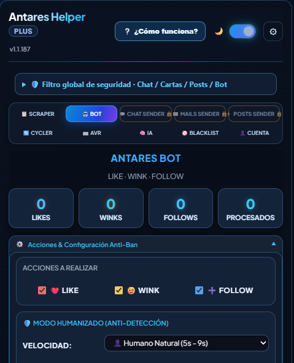

¡Hasta pronto!
Sentimos que hayas desinstalado Antares Auto-Cycler. Gracias por habernos dado una oportunidad. Seguiremos mejorando nuestras herramientas.
Antares Helper
Explorar Antares Helper
Antares Helper es una extensión independiente diseñada para mejorar la productividad, seguridad y organización de conversaciones en TalkyTimes.
Funciones principales
Filtro global de seguridad
Sistema configurable para detectar y bloquear mensajes que contengan palabras prohibidas o solicitudes potencialmente indebidas antes de enviarlos por chat, cartas o publicaciones.
Incluye reglas para detectar solicitudes de teléfonos, correos electrónicos, contactos externos, dinero, regalos y encuentros presenciales.
Permite añadir palabras personalizadas, comprobar textos y recibir alertas de seguridad.
Detección de chats que facturan y chats perdidos
Antares Helper incorpora un sistema inteligente de identificación visual de conversaciones mediante colores e indicadores:
- 💚 Chat que factura: identifica con fondo verde las conversaciones en la lista de chat que generan ingresos, así como también aquellas que facturan pero no se reciben notificaciones (Audio/Carta/Post leído).
- 🔴 Chat perdido: destaca con fondo rojo e icono de advertencia las conversaciones de la lista de chat que requieren atención por mensajes recibidos sin respuesta a los 3 minutos de haberlas recibido.
Los indicadores se actualizan conforme cambian las condiciones de cada conversación y permiten priorizar la atención de los contactos. Son indicadores operativos y no certificaciones de ingresos o pagos.
Inteligencia artificial y redacción
Botón especial en Mails- Active limits que detecta todas las cartas que estén leídas "Read" en todas las paginas.
Botón especial en Manage Media, para guardar audios mas usados como Favoritos y encontrarlos de forma instantánea mediante el sistema de Favoritos sin perder tiempo.
Asistente de IA para preparar respuestas y borradores personalizados que el usuario puede revisar antes de enviarlos.
Incluye herramientas de redacción, 200 temas de conversación y funciones para reducir mensajes repetitivos.
Gestión de conversaciones
- Traducción de textos y mensajes en diferentes idiomas.
- Refresco automatico de pagina configurable.
- Atajos personalizados y plantillas.
- Identificación visual mediante colores e iconos.
- Organización de contactos, listas y perfiles.
- Comprobación de actividad reciente en las conversaciones.
Herramientas de envío
Preparación y gestión de mensajes y borradores con controles de inicio y detención.
Incluye funciones de envío por lotes iniciadas por el usuario, prevención de mensajes duplicados, comprobaciones de inactividad y seguimiento del progreso.
Algunos modos requieren revisión y aprobación de los borradores antes de enviarlos.
Herramientas adicionales
- Auto Cycler con controles configurables.
- Scraper para recopilar información disponible en la sesión del usuario.
- Filtros y preferencias personalizables.
- Notificaciones flotantes sobre el estado de los procesos.